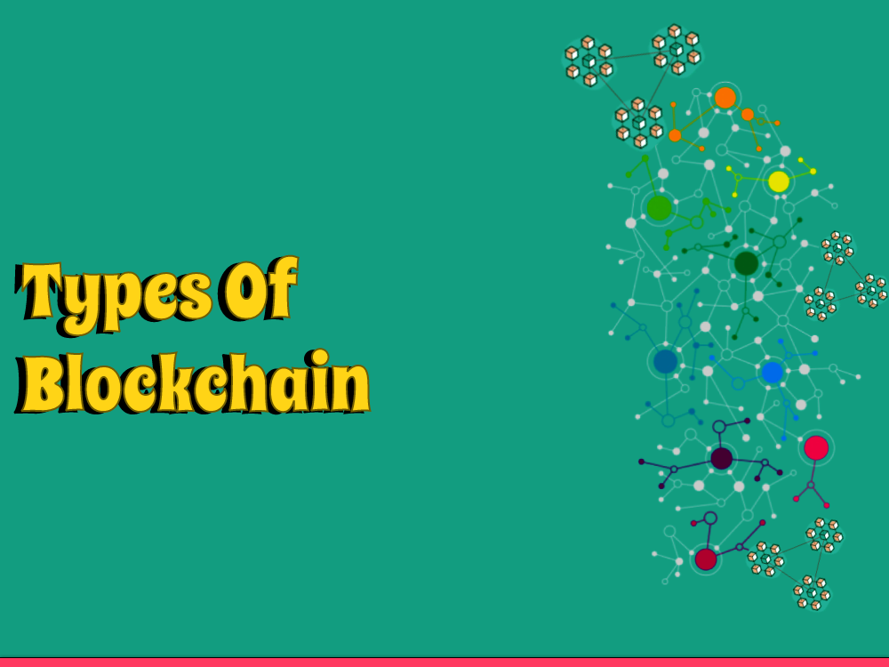

Blockchain innovation has changed different ventures, offering decentralized and straightforward arrangements. Be that as it may, not all blockchains are made equivalent. In this blog entry, we will investigate the various kinds of blockchain, revealing insight into their exceptional attributes, use cases, and advantages. From public blockchains to private and consortium blockchains,
we should set out on an excursion to figure out the different universe of circulated record innovation.
I. Public Blockchains: Releasing the Force of Decentralization
Public blockchains are open and permissionless organizations that permit anybody to take part in the approval and agreement process. They accomplish decentralization by dispersing the blockchain record across an organization of hubs, where every hub has a duplicate of the whole blockchain. Central issues to cover include:
1: How public blockchains accomplish decentralization and unchanging nature: Make sense of the agreement components utilized in open blockchains, like Evidence of Work (PoW) or Confirmation of Stake (PoS). Examine how these systems guarantee security, permanence, and confidence in the organization.
2: Examples of famous public blockchains like Bitcoin and Ethereum: Feature the spearheading job of Bitcoin as the primary public blockchain, zeroing in on its utilization as a computerized money and store of significant worth. Examine Ethereum's commitment to the improvement of savvy contracts and decentralized applications (dApps).
3: Use cases in regions, for example, shared exchanges, decentralized applications (dApps), and shrewd agreements: Investigate how public blockchains work with direct distributed exchanges without mediators, empowering trust and diminishing expenses. Examine the capability of savvy contracts and dApps to upset different enterprises, for example, finance, inventory network, and gaming.
4: Advantages and difficulties of public blockchains: Feature the advantages of straightforwardness, security, and comprehensiveness that public blockchains offer. Talk about the difficulties they face, including versatility impediments, energy utilization concerns, and exchange charges.
II. Confidential Blockchains: Engaging Venture Grade Solutions
Private blockchains, otherwise called permissioned blockchains, limit admittance to a particular gathering of members. They offer more control, protection, and versatility contrasted with public blockchains. Central issues to cover include:
1: The idea of permissioned blockchains and their controlled admittance: Make sense of how private blockchains expect members to acquire consent to join the organization and access the blockchain. Examine the job of personality the executives and access control in keeping up with the protection and security of private blockchains.
2: Benefits of private blockchains with regards to expanded productivity, protection, and administrative consistence: Talk about how private blockchains give quicker exchange handling, higher throughput, and improved security contrasted with public blockchains. Make sense of how they can meet administrative prerequisites in enterprises that handle delicate information, like medical services or money.
3: Use cases in businesses, for example, store network the executives, money, and medical services: Investigate how private blockchains can smooth out store network processes, work with secure and productive monetary exchanges, and empower secure sharing of patient records in medical services settings.
4: Considerations for executing and getting private blockchains inside associations: Talk about the variables associations need to consider while carrying out private blockchains, including network plan, agreement systems, information security, and organization administration. Feature the significance of solid safety efforts to safeguard against unapproved access or altering.
III. Consortium Blockchains: Joint effort for Improved Trust and Efficiency
Consortium blockchains are a half and half model that includes a gathering of associations cooperating to keep a blockchain network. They give a harmony among receptiveness and security, offering shared control and navigation. Central issues to cover include:
1: Understanding the common administration model of consortium blockchains: Make sense of how consortium blockchains are represented by a consortium or consortium individuals, who by and large go with choices in regards to arrange tasks, updates, and access control.
2: Collaboration benefits, like expanded trust, further developed interoperability, and shared assets: Talk about how consortium blockchains empower associations to team up while keeping up with trust and information security. Feature the advantages of interoperability, shared assets, and cost decrease.
3: Real-world instances of consortium blockchains, including Hyperledger Texture and R3 Corda: Give instances of consortium blockchains that have gotten some forward movement in various businesses. Talk about their particular use cases, engineering, and elements that make them appropriate for consortium-based joint effort.
4: Use cases in ventures like exchange money, strategies, and character the board: Investigate how consortium blockchains are used in enterprises that require multi-party cooperation, for example, exchange finance stages, store network operations, and personality check frameworks.
IV. Half and half Blockchains: Blending the Best of Both Worlds
Mixture blockchains join components of public and private blockchains to take care of explicit use cases that require both transparency and security. They offer adaptability and versatility in overseeing information and organization access. Central issues to cover include:
1: Exploring the half and half blockchain design and its versatile nature: Make sense of how cross breed blockchains coordinate public and confidential parts to accomplish the ideal degree of receptiveness, straightforwardness, and security. Examine the adaptability in figuring out which information is put away openly and which stays private.
2: Benefits of mixture blockchains, including adaptability, protection, and specific straightforwardness: Feature the upsides of cross breed blockchains, for example, further developed versatility through off-chain exchanges, particular information sharing, and security safeguarding highlights.
3: Use cases, for example, store network following, licensed innovation freedoms the board, and government applications: Give instances of purpose situations where mixture blockchains offer the right equilibrium between straightforwardness and protection. Talk about how half and half blockchains can work with secure production network following, safeguard licensed innovation freedoms, and improve taxpayer supported organizations.
4: Challenges and contemplations for carrying out half breed blockchains: Talk about the difficulties associations might confront while executing crossover blockchains, for example, keeping up with information consistency, guaranteeing interoperability among public and confidential parts, and overseeing network administration.
V. Arising Patterns and Future Outlook
In this segment, feature the arising patterns and possible future headways in blockchain innovation. Central issues to cover include:
1: Highlighting arising patterns in blockchain innovation, like interoperability and adaptability arrangements: Examine continuous innovative work endeavors pointed toward tending to the versatility impediments of existing blockchains and accomplishing interoperability between various blockchain networks.
2: Potential utilizations of blockchain in arising fields like Web of Things (IoT), medical services, and energy: Investigate how blockchain innovation can change different businesses, for example, empowering secure and independent IoT biological systems, further developing medical services information interoperability, and working with shared energy exchanging.
3: Anticipated headways in blockchain innovation and their expected effect on different businesses: Talk about potential progressions, for example, sharding, sidechains, and agreement calculation enhancements that might address current restrictions and open additional opportunities for blockchain innovation.
Conclusion
As we close our investigation of the kinds of blockchain, we perceive the monstrous potential and adaptability that circulated record innovation offers. Public, private, consortium, and cross breed blockchains each fill explicit needs, taking special care of the different necessities of enterprises and associations around the world.
By understanding the qualities and uses of these various kinds, we can outfit the force of blockchain to drive advancement, straightforwardness, and productivity across different areas.